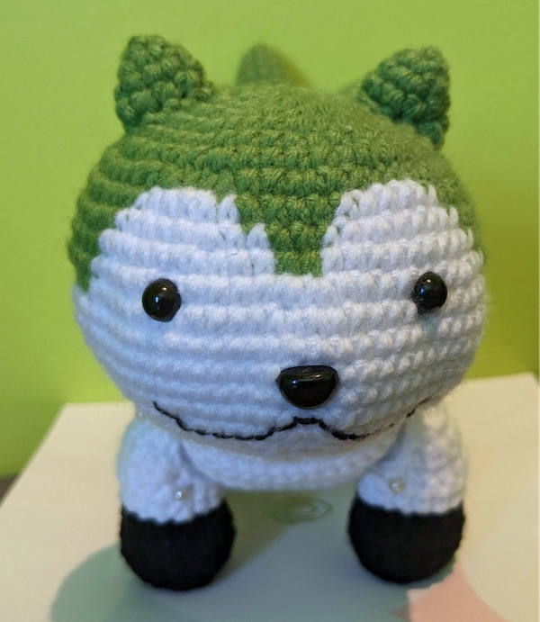

Sommie!
A crochet pattern by Eifie!
Contact
- Tumblr: wherefore-whinnies.tumblr.com
- Ko-Fi: ko-fi.com/eifie
- Twitter: twitter.com/whrfr_whinnies
About this pattern
This pattern was originally made for @fe-aspec-week on Tumblr, which is why the Sommie pictured has an aromantic flag colour scheme instead of blue, white, and red. Of course, by following this pattern you can make your own Sommie in any combination of colours!
This pattern is distributed for free on my Ko-fi page (via a link to where it's hosted on GitHub pages). If you got it from elsewhere, it was stolen, and if you paid for it unfortunately you were scammed. I would appreciate it if you would contact me to let me know.
I have done my best to make this pattern accessible to those using assistive technologies. This is my first time ever making a crochet pattern, though, so I may not have done the best job. If there is something I can do to make this pattern easier for you to access, I would love it if you would let me know!
If you have any questions about this pattern, feel free to contact me (the easiest way for me is for you to send me an ask on my Tumblr) and I will do my best to help you!
Copyright
Sommie is part of the Fire Emblem franchise and does not belong to me! But this pattern and the photos included in it are my work and do belong to me. They are intended for personal use only.
Things you may do with this pattern:
- Post photos of your finished pieces, so long as you do not claim to be the original designer. Ideally you would credit me and link back to my Ko-fi.
- Sell the finished pieces, so long as they are made by hand and listed using your own photos, and I am credited as the original designer with a link back to my Ko-fi.
- Pay someone to make a Sommie for you following this pattern, as long as that person also follows these conditions.
Things you may not do with this pattern:
- Redistribute it in any way other than indicated above, even for free.
- Claim this pattern as your own, etc.
Things you should ask me before doing:
- Translating this pattern into another language to redistribute.
Before you begin
Materials
-
Yarn: I used #4 medium/worsted weight yarn, which produced a Sommie roughly 6 inches tall, 4 inches across
(not including the flaps of the scarf), and 8 inches long. I am not sure of the yardages, but I used less
than a ball each (200 yards?) of the following yarns:
- Accent colour: I used Bernat Super Value Solid in Lush (green), but you will want a blue yarn for a regular-coloured Sommie.
- Body colour: Loops & Threads Impeccable Solid in White.
- Paw colour: I used CraftSmart Value in Black, but you will want to re-use the accent colour yarn for the paws for a regular-coloured Sommie.
- Scarf colour: I used Red Heart Soft in Light Gray Heather. You can use any colour of your choice here. Sommie's default scarf colour is kind of a coral red.
- Crochet hook (3.25 mm, size D)
- Black safety eyes (8 mm) and black safety nose (11 mm)
- Black embroidery thread
- Craft wire (optional for poseable legs)
- Typical amigurumi tools and materials: stuffing, stitch markers, yarn needles, etc.
Skills required
This pattern is written using U.S. crochet terminology and requires knowledge of the following techniques:
- Basic amigurumi techniques: creating a magic ring, working in the round (both in a continuous spiral and with joined rounds), increases and invisible decreases
- Basic working in rows (for the scarf)
- Colour changes, and ideally half colour changes (e.g. referencing this tutorial on half colour changes. It includes a link to a YouTube video with spoken instructions. Here is an archived version of the tutorial on half colour changes if the previous link doesn't work). However, the half colour changes are optional and can just be worked as regular stitches in the new colour instead for a slightly messier result.
- Basic sewing pieces together
- Basic embroidery (I just used a back stitch) for embroidering the mouth onto the face, or you could do the mouth some other way like with felt if you prefer
List of stitches
You should know these terms to be able to follow this pattern:
- Chain stitch
- Single crochet
- Magic ring
- Increase (two single crochets in the same stitch)
- Three single crochet increase (three single crochets in the same stitch)
- Invisible decrease (will be written as just "decrease", i.e. all decreases are invisible decreases)
- Slip stitch
- Single crochet two together
- Single crochet three together
- Back loop only, e.g. Single crochet 2 back loop only means work the next two single crochets into the back loops only of the stitches you're working into
How to read this pattern
No abbreviations are used for the easy-read version of this pattern. Lines of the pattern will look like this:
-
Total 19 stitches:
- Single crochet 2, then increase.
- Repeat previous line 2 more times.
- Single crochet 3.
- Increase 2.
This means that for row (or round 1), you will make 2 single crochets and then 1 increase, and do that 2 more times for 3 repetitions total. In total at this point you will have done: 2 single crochets, then 1 increase, then 2 single crochets, then 1 increase, then 2 single crochets, then 1 increase. Then you will make another 3 single crochets. Finally you will make 2 increases. In the end you will have a total of 19 stitches in that row (or round). These total stitch counts do not include the chain you do at the start of a row or at the start of a joined round.
For rows/rounds that are just single crochets and nothing else, I won't indicate the total number of stitches separately. So such a row would for example just look like:
- Single crochet 40.
The pattern!
Head
The head will be worked from top to bottom, using joined rounds (i.e. at the end of each round you slip stitch into the first stitch of that round, then chain 1). This is so that all the colour changes will remain even. If we worked in a spiral instead, they'd all be pulled to one side and look strange. However, this will leave a visible seam at the center of the back of the head. If that bothers you, you can look up techniques for a seamless join, but since it's at the back of the head, I just left it.
Worked in joined rounds, starting in the accent colour.
- Work 8 single crochets into a magic ring.
-
Total 16 stitches:
- Increase 8.
-
Total 24 stitches:
- Single crochet, then increase.
- Repeat previous line 7 more times.
-
Total 32 stitches:
- Single crochet, then increase, then single crochet.
- Repeat previous line 7 more times.
-
Total 40 stitches:
- Single crochet 3, then increase.
- Repeat previous line 7 more times.
- Single crochet 40.
-
Total 48 stitches:
- Single crochet 2, then increase, then single crochet 2.
- Repeat previous line 7 more times.
- Change colour to the body colour for the chain 1 at the end of the round (i.e., to do the chain 1, pull through a loop of the body colour instead of a loop of the accent colour). Do not cut the accent colour yarn.
From the next round we're going to start working in the body colour, so we'll have to switch between colours multiple times in each round. For each round I'll detail which stitches are in which colours. You always change colour before the first stitch of that colour, i.e. if it says single crochet 2 in body colour then single crochet in accent colour, then for the second single crochet in the body colour the last loop you pull through should be in the accent colour. The slip stitch and chain 1 at the end of each round will now always be in the body colour.
-
Total 56 stitches:
- In body colour: single crochet 2.
- In accent colour: single crochet 3, then increase, then single crochet 5, then increase, then single crochet 5, then increase.
- In body colour: single crochet 4.
- In accent colour: single crochet 1, then increase, then single crochet 3.
- In body colour: single crochet 2, then increase.
- In accent colour: single crochet 5, then increase, then single crochet 5, then increase, then single crochet 3, then increase.
- In body colour: single crochet 2.
-
Total 56 stitches:
- In body colour: single crochet 3.
- In accent colour: single crochet 17.
- In body colour: single crochet 6.
- In accent colour: single crochet 4.
- In body colour: single crochet 6.
- In accent colour: single crochet 17.
- In body colour: single crochet 3.
-
Total 64 stitches:
- In body colour: single crochet 3, then increase.
- In accent colour: single crochet 6, then increase, then single crochet 6, then increase, then single crochet 1.
- In body colour: single crochet 5,then increase, then single crochet 2.
- In accent colour: single crochet 2.
- In body colour: single crochet 2, then increase, then single crochet 1.
- In accent colour: single crochet 1, then increase, then single crochet 6, then increase, then single crochet.
- In body colour: increase, then single crochet 3.
-
Total 64 stitches:
- In body colour: single crochet 6.
- In accent colour: single crochet 15.
- In body colour: single crochet 10.
- In body colour, using half colour changes to accent colour: single crochet 2.
- In body colour: single crochet 10.
- In accent colour: single crochet 15.
- In body colour: single crochet 6.
-
Total 72 stitches:
- In body colour: single crochet 7.
- In accent colour: increase, then single crochet 7, then increase, then single crochet 4.
- In body colour: single crochet 3, then increase, then single crochet 7, then increase 2, then single crochet 7, then increase, then single crochet 3.
- In accent colour: single crochet 4, then increase, then single crochet 7, then increase.
- In body colour: single crochet 7.
We're almost done with the colour changes! The next round will be done entirely in the body colour, but for best results you should use half colour changes to the accent colour when working into the accent colour stitches, which means don't cut your accent colour yarn yet. I will indicate which stitches should use half colour changes.
-
Total 72 stitches:
- In body colour: single crochet 7.
- In body colour, using half colour changes to accent colour: single crochet 15.
- In body colour: single crochet 28.
- In body colour, using half colour changes to accent colour: single crochet 15.
- In body colour: single crochet 7.
Cut the accent colour thread and tie it off (finally!). The rest of the head will be worked in the body colour only.
-
Single crochet 72.
At this point you can insert the safety eyes between rounds 12 and 13. Mine are between stitches 29 to 30 and 43 to 44.
- Single crochet 72.
- Single crochet 72.
-
Single crochet 72.
Now you can insert the safety nose between rounds 15 and 16, centered between the eyes (probably between stitches 36 and 37).
-
Total 56 stitches:
- Single crochet 1, then decrease.
- Repeat previous line 5 more times.
- Single crochet 7, then decrease.
- Repeat previous line 3 more times.
- Single crochet 1, then decrease.
- Repeat previous line 5 more times.
-
Total 48 stitches:
- Single crochet 2, then decrease.
- Repeat previous line 2 more times.
- Single crochet 2.
- Single crochet 12, then decrease.
- Repeat previous line 1 more time.
- Single crochet 2, then decrease.
- Repeat previous line 2 more times.
- Single crochet 2.
At this point you can embroider the mouth onto the face. Mine is done on the 2 rounds below the nose, and is about 15 stitches long. The shape of the mouth is like the number 3 rotated onto its side so that the curves are going downward, but the curves are more gradual and less deep than on the number 3. Starting at about 7 stitches to one side from the center of the nose, embroider a horizontal line curving gently downward in the middle, working towards the center of the nose. Then embroider a short horizontal line under the center of the nose and parallel to the bottom of the nose (mine is just one stitch). Finally, embroider another gently curving horizontal line just like the first.
-
Total 40 stitches:
- Single crochet 2, then decrease, then single crochet 2.
- Repeat previous line 7 more times.
Start stuffing as you go. Make sure to stuff the head firmly, especially at the back, otherwise the decreases will have a weird shrivelled shape.
-
Total 32 stitches:
- Single crochet 3, then decrease.
- Repeat previous line 7 more times.
-
Total 24 stitches:
- Single crochet, then decrease, then single crochet.
- Repeat previous line 7 more times.
-
Total 16 stitches:
- Single crochet, then decrease.
- Repeat previous line 7 more times.
-
Total 8 stitches:
- Decrease 8.
-
Total 4 stitches:
- Decrease 4.
Fasten off, trim the tail and hide the rest of it inside the head.
Ears
Make 2. Worked from top to bottom in a continuous spiral, using the accent colour.
- Work 3 single crochets into a magic ring.
-
Total 6 stitches:
- Increase 3.
-
Total 9 stitches:
- Single crochet, then increase.
- Repeat previous line 2 more times.
- Single crochet 9.
Slip stitch into the first stitch of round 4 and fasten off, leaving a tail to sew to the head.
Body
Worked from back to front in a continuous spiral, using the body colour.
- Work 8 single crochets into a magic ring.
-
Total 16 stitches:
- Increase 8.
-
Total 24 stitches:
- Single crochet, then increase.
- Repeat previous line 7 more times.
-
Total 32 stitches:
- Single crochet, then increase, then single crochet.
- Repeat previous line 7 more times.
-
Total 40 stitches:
- Single crochet 3, then increase.
- Repeat previous line 7 more times.
- Single crochet 40.
-
Total 48 stitches:
- Single crochet 2, then increase, then single crochet 2.
- Repeat previous line 7 more times.
- Single crochet 48.
-
Total 56 stitches:
- Single crochet 5, then increase.
- Repeat previous line 7 more times.
- Single crochet 56.
-
Total 64 stitches:
- Single crochet 3, then increase, then single crochet 3.
- Repeat previous line 7 more times.
- Single crochet 64.
- Single crochet 64.
- Single crochet 64.
- Single crochet 64.
- Single crochet 64.
- Single crochet 64.
- Single crochet 64.
- Single crochet 64.
- Single crochet 64.
- Single crochet 64.
- Single crochet 64.
-
Total 60 stitches:
- Single crochet 3, then decrease, then single crochet 3.
- Repeat previous line 3 more times.
- Single crochet 32.
-
Total 56 stitches:
- Single crochet 5, then decrease.
- Repeat previous line 3 more times.
- Single crochet 32.
Start firmly stuffing the body now. At this point the body will just be a simple half-open cylinder shape.
We will now start working in short rows to change the angle of the opening, in order to create a space for the head to sit on (since Sommie doesn't really have a neck). This means that we'll be briefly working in rows that go only part of the way around the body in order to add length to the chest so that we can curve it up. You can reference a tutorial for the style of short rows I used. There's an included video with spoken instructions, though the speaker does regularly point out specific parts of the work while talking. If you know of a more accessible tutorial, please let me know! Here is an archived version of the tutorial on short rows if the previous link doesn't work.
The important part is make sure not to chain 1 at the end of each row before turning. Work the first stitch of each row directly into the last stitch of the previous row. I highly recommend placing a stitch marker in the first stitch of each short row because it will make your life much easier when we resume working in rounds.
Turn your work before starting row 25.
- Single crochet 24, then turn.
- Single crochet 23, then turn.
- Single crochet 22, then turn.
- Single crochet 21, then turn.
- Single crochet 20, then turn.
- Single crochet 19, then turn.
- Single crochet 18, then turn.
- Single crochet 17, then turn.
- Single crochet 16, then turn.
- Single crochet 15, then turn.
-
Single crochet 14, then turn.
The body will now look like a stuffed, half-open cylinder with a protruding flap made up of short rows.
We will now resume working in rounds. Reference the tutorial I linked previously if you're confused about which stitches of the short rows to work into. They're exactly the ones you put your stitch markers into if you followed my advice earlier. We will not be working into the sides of any stitches, so the round size will remain at 56 stitches around.
- Single crochet 56.
- Single crochet 56.
-
Total 48 stitches:
- Single crochet 5, then decrease.
- Repeat previous line 7 more times.
-
Total 40 stitches:
- Single crochet 2, then decrease, then single crochet 2.
- Repeat previous line 7 more times.
-
Total 32 stitches:
- Single crochet 3, then decrease.
- Repeat previous line 7 more times.
Fasten off, leaving a long tail to sew to the head.

Tail
Tail spikes: make 3, using the accent colour. Worked from top to bottom in a continuous spiral. You can stuff as you go or not stuff at all, your preference. Mine are not stuffed.
- Work 3 single crochets into a magic ring.
-
Total 6 stitches:
- Increase 3.
-
Total 9 stitches:
- Single crochet, then increase.
- Repeat previous line 2 more times.
- Single crochet 9.
-
Total 12 stitches:
- Single crochet, then increase, then single crochet.
- Repeat previous line 2 more times.
- Single crochet 12.
- Single crochet 12.
- Single crochet 12.
- Single crochet 12.
-
Total 9 stitches:
- Single crochet, then decrease, then single crochet.
- Repeat previous line 2 more times.
- Single crochet 9.
-
Single crochet 9.
For the first two tail spikes, slip stitch into the first stitch of round 12, then tie off and leave a tail long enough to sew a few stitches. For the third spike, keep it on the hook and continue on to attaching the spikes together (next paragraph).
Attaching the three spikes together: call the tail spike that you have still on your hook "piece 1". The other two will be "piece 2" and "piece 3". Piece 1 will be the one in the middle of the tail. When a stitch says e.g. "single crochet onto piece 2", it doesn't really matter which stitch you work into on piece 2, though I find it easiest to just start with the first stitch of round 12 on that piece. Then for the following stitches you continue working in the round on the piece you single crocheted onto until the instructions tell you to single crochet onto another piece.
-
Starting on piece 1. Total 21 stitches:
- Single crochet, then decrease, then single crochet.
- Single crochet onto piece 2, then single crochet, then decrease, then single crochet 2, then decrease, then single crochet.
- Single crochet back onto piece 1 (onto the 5th stitch of piece 1's round 12, i.e. the first unworked stitch of that round), single crochet 2, then decrease.
- Single onto piece 3, single crochet, then decrease, then single crochet 2, then decrease, then single crochet.
You should now have worked into each stitch in round 12 of each of the 3 tail spikes. The next stitch that you will work into (and the beginning of the next round) is the first stitch that you worked into on piece 1, i.e., the first stitch of round 13 on piece 1. The other two tail spikes have tails; leave those just hanging around in the middle for now.
-
Total 14 stitches:
- Single crochet, then decrease.
- Repeat previous line 6 more times.
-
Total 7 stitches:
- Decrease 7.
Slip stitch into the first stitch of round 15 and fasten off, leaving a tail to sew to the body.
Now you have 3 tails: the one you just left from round 15, and the two tails hanging from round 9 of pieces 2 and 3. Optionally you can use those tails to sew the insides of pieces 2 and 3 a little way up onto the closest side of piece 1 so that the tail spikes are all sort of "glued" together. This will give the tail the look of having three distinct sections but the sections are attached together. Or if you like the tail the way it is, you can just trim/hide those tails.
If you're sewing the spikes together, when you're done with each yarn tail, insert your yarn needle into a close-by stitch and pull it out through the opening at the bottom that you will use to attach the piece to the body. That way, you can knot the yarn securely, so your stitches will stay.
Legs
Make 4. Worked from bottom to top in joined rounds to keep the back loop only round and the colour change even. Start with the paw colour.
- Work 8 single crochets into a magic ring.
-
Total 16 stitches:
- Increase 8.
- In the back loop only: single crochet 16.
- Single crochet 16.
- Single crochet 16. Change to body colour when doing the chain 1 but don't cut the paw colour yarn yet.
- Single crochet 16 using half colour changes from the paw colour to the body colour. Cut and tie off the paw colour yarn.
-
Single crochet 16. Do the slip stitch at the end of the round but do not chain 1.
Switch to working in short rows. See the body pattern for more detailed instructions. Turn your work before starting row 8.
- Single crochet 8, then turn.
- Single crochet 7, then turn.
- Single crochet 6, then turn.
- Single crochet 5, then turn.
-
Single crochet 4, then turn.
Resume working in rounds.
- Single crochet 16, going all the way around.
Single crochet into the first stitch of round 13 and then fasten off. Leave a tail to sew to the body.
If you want to add a wire to each leg for posing:
- Cut a piece of craft wire about 3 times the height of the leg at its tallest point.
-
Cross the ends of the wire over each other and shape the section of wire between them to form a circle
slightly smaller than the base of the foot.
-
Twist one end of the wire around the other where they connect to secure the shape.
-
Wrap a bit of masking tape around the protruding edge of the wire you twisted, to cover it.
- If you haven't already, bend the end of the wire so that the circle is at a 90 degree angle to the rest of the wire which sticks up in a straight line.
- Push the circle base down into the leg until it's flush against the bottom of the foot. (This can be a bit difficult since you don't have much space to work with to manipulate the wire.)
-
Bend the wire sticking out of the hole at the top of the leg at a 90 degree angle away from the short
rows. We will stick this end of the wire into the body when attaching the leg.
Whether or not you added a wire, stuff the leg to your desired firmness.
Assembly
Before you can make the scarf, you need to assemble the rest of your Sommie!
-
Sew the ears to the head. Mine were attached between rounds 3 to 7 on each side, just about centered
depth-wise on the head.
-
Sew the head to the body. When we made the body, we left a little "groove" in which to place the head. It
won't be a perfect fit and the attachment point might look a little strange after sewing, but it's fine
since the scarf will cover it up.
-
Sew the tail atop the body near the back. Mine was centered at the back of the body between rounds 7 to 8.
After attaching the tail, you can also embroider or felt on the X on the butt if you wish.
-
Sew the legs to the body. If you put wire in the legs, position the legs on the body by first sticking the
wires into the body before pinning them. I wish I could give good advice on the placement, but I always
just pin them on semi-randomly and hope it works...


Scarf
Worked in rows (chain 1 and turn at the end of each row) in the scarf colour. I recommend leaving long tails (including the ones at the start of your slip knots) so that you can weave them far through the length of the scarf and then they'll be hidden against Sommie's neck once the scarf is tied.
- Chain to your desired length. The number of stitches you need isn't exact and doesn't really matter as long as your base chain is long enough to comfortably wrap around Sommie's neck with some room left over to be able to tie the scarf. My chain was a perfectly innocent and arbitrarily-chosen number of 69 chains, plus an extra chain 1 and turn.
- Single crochet all the way across the chain.
- Increase by working three single crochets into one stitch. Then single crochet across the piece until there is one unworked stitch remaining. Then increase in that final stitch by working three single crochets into it.
-
Single crochet three together. Then single crochet across the piece until there are three unworked
stitches remaining. Then single crochet three together.
At this point you'll have a long rectangular shape with somewhat pointy edges. Cut your yarn, leaving a long tail. Tie your work around Sommie's neck with the knot on the right side of the neck (your right side, when viewing from the front). Position the work so that row 4 is pointing down away from Sommie's head. Now mark (e.g. using stitch markers) the stitches that you want to use as the edges of the triangle part of the scarf so that the triangle goes across the chest and is about as wide as the bottom of the head. Make sure that you have an odd number of stitches between them (so you may need to move one of the stitch markers over by one). Note that the triangle will not be centered on the entire piece since Sommie's scarf ties at the side of its neck rather than at the back.
Including the stitches with stitch markers in them, my Sommie's scarf triangle is 13 stitches across. The next part of the pattern will be written for that size, but it can be adapted to any odd number of stitches by adding or removing rows.
The number of rows you will need for the triangle part of the scarf is the number of stitches across minus 1, all divided by 2. Since mine is 13 stitches across, I will need 6 rows. Keep this in mind if you want a specific side of the triangle to be at the front of the scarf. I think it looks better if the single crochet three together in the final row of the triangle is done on the front side, so I would start row 5 on the back side of the scarf so that row 10 can be on the front side.
Make a new slip knot (remember to leave a long tail) and start working from one of the stitches that you marked (it doesn't matter which because this pattern is symmetrical), working in the direction of the other marked stitch. As before, chain 1 and turn at the end of each row except the final one.
-
11 stitches total:
- Single crochet 2 together.
- Single crochet across until there are 2 unworked stitches left.
- Single crochet 2 together.
-
9 stitches total:
- Single crochet 2 together.
- Single crochet across until there are 2 unworked stitches left.
- Single crochet 2 together.
-
7 stitches total:
- Single crochet 2 together.
- Single crochet across until there are 2 unworked stitches left.
- Single crochet 2 together.
-
5 stitches total:
- Single crochet 2 together.
- Single crochet across until there are 2 unworked stitches left.
- Single crochet 2 together.
-
3 stitches total:
- Single crochet 2 together, then single crochet 1, then single crochet 2 together.
- Single crochet 3 together.
Cut your yarn, leaving a long tail, and fasten off. Weave in all loose ends.
Now all you have to do is tie the scarf around Sommie's neck!
Congratulations! You have made your very own Sommie!
I would love to see what you make, so please tag me in your creations on Tumblr or Twitter! You can click here to jump back to my list of socials.